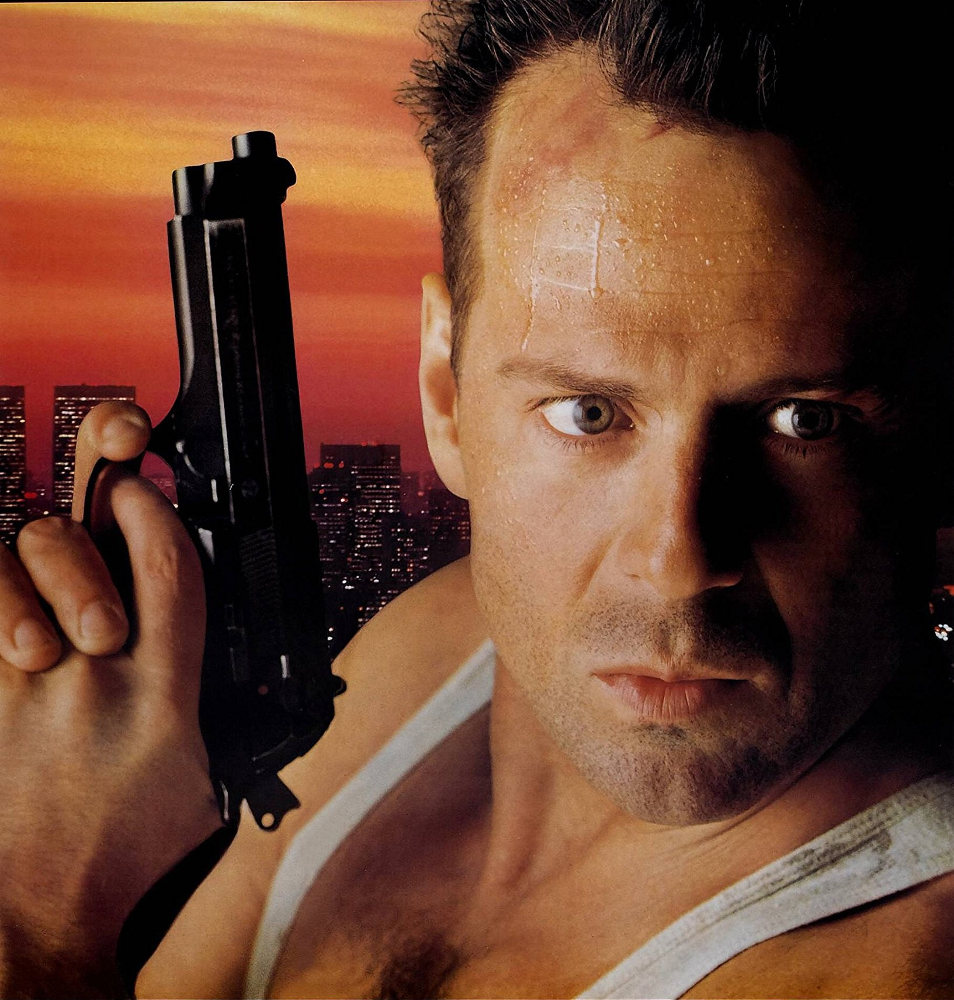

Twelves terrorists. One cop.
The odd are against John McClane...
That's just the way he likes it.

HEllO!!B R U C EHIW I L L I S
000DIE HARD
TWENTIEH CENTURY FOX Presents A GORDON COMPANY/SILVER PICTURES Production A JOHN McTIERNAN Film BRUCE WILLIS DIE HARD ALAN RICKMAN ALEXANDER GODUNOV BONNIE BELIA Music by MICHAEL KAMEN Visual Effects Produced by RICHARD EDLUND Film Editors FRANK J. URIOSTE, A.C.E. and JOHN F. LINK Production Designer JACKSON DeGOVIA Director of Photography JAN De BONT Executive producer CHARLES GORDON Screenplay By JEB STUART and STEVEN E. de SOUZA Based on the novel by RODERICK THORP Produced by LAWRENCE GORDONand JOEL SILVER Directed by JOHN McTIERNAN